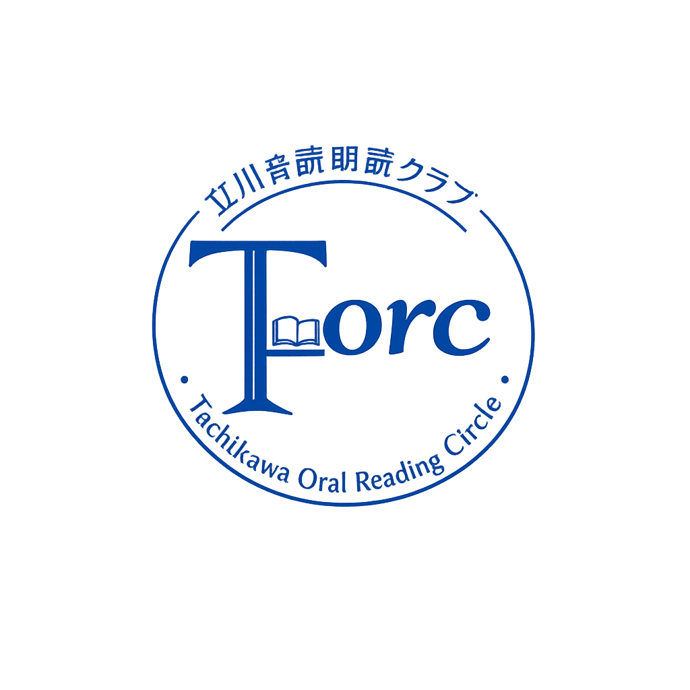

立川から広がる朗読の輪。
T‑orc（Talk / Tachikawa Oral Reading Circle）は、立川市を拠点に活動する 音読・朗読クラブです。文学作品を声に出して読むことで、表現力を育て、 作品の奥行きを味わい、人と人がつながる場をつくっています。
文学作品を声に出して読み、表現力を磨きます。
発声・間・読み方など、朗読の基礎を学びます。
作品の感想を共有し、年1回の発表会も開催します。
朗読が初めての方も歓迎します。文学が好きな方、声を出すことが好きな方、 新しい趣味を見つけたい方、どなたでも気軽にご参加いただけます。
体験参加を申し込む